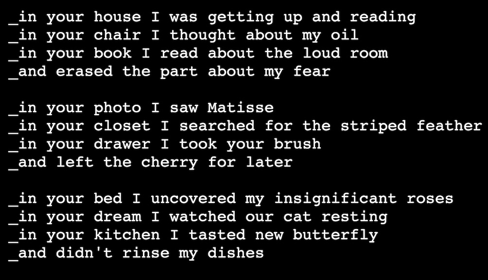
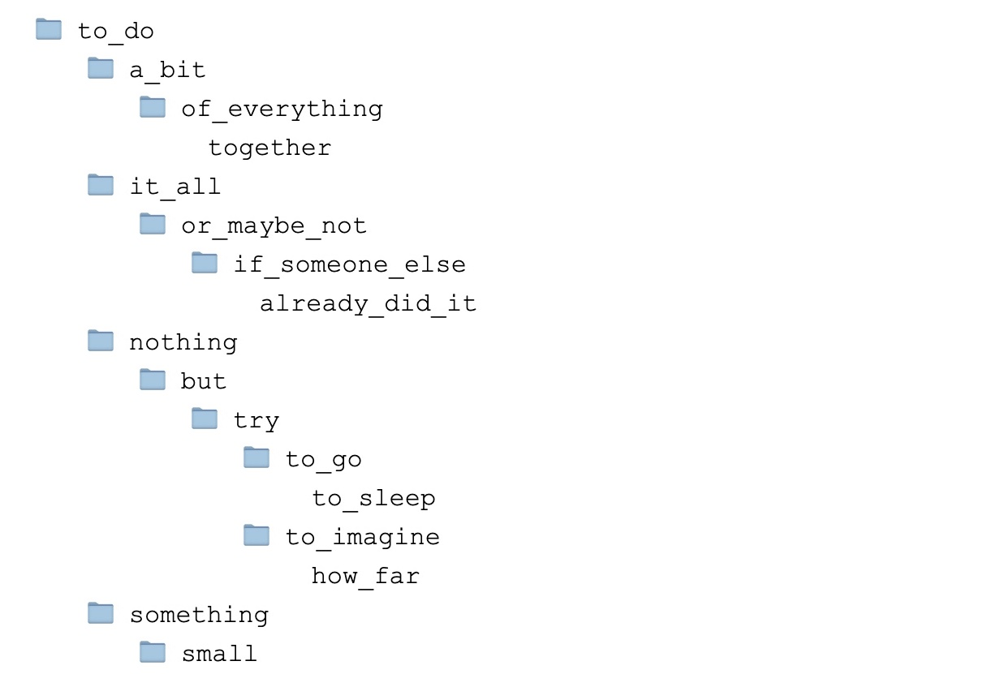
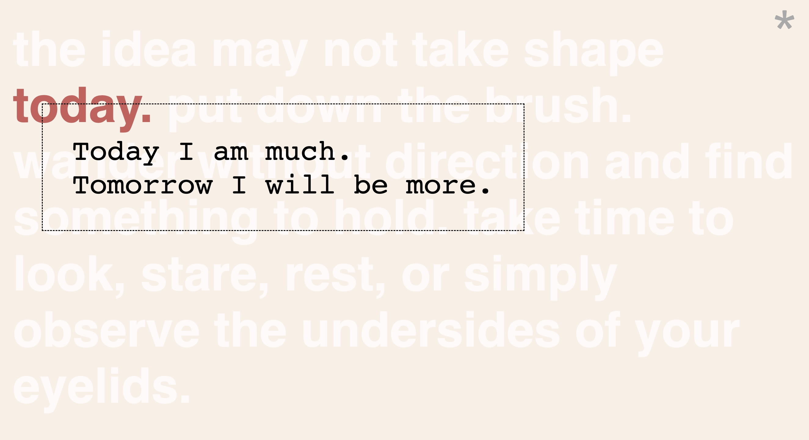

in_your_painting, 2022 is part of a series of browser-based works exploring quotation, collage, and language. Drawing from the history of Dada poetry, in_your_painting uses a hand-coded computer program to generate a series of phrases, which seem to lead us through someone else’s space.
The narrative is partially constructed through a random sampling of titles from the mid-twentieth-century paintings of Balthus, all of which depict the young female body.
Iterations of this work were included in the exhibitions and a Rag in the Other at the Alternator Centre and We can only hint at this with words at the Gordon Smith Gallery for Candian Art.

to-do-to-do, 2021 is a collaborative interactive website created with Matthis Grunsky for the Number 3 Gallery SPAM series.
The project, created in the midst of the COVID-19 lock-down, features a series of small hand-coded website that explore the act of list making as mechanism for dealing with times of uncertainty.

Blank Page Melancholia, 2020 is a browser-based work created during the School for Poetic Computation's Digital Love Languages course.
The website samples from a collection of texts to generate ever-changing observations, affirmations and words of encouragement for anyone feeling stuck.
Inside Out, 2018 is a collaborative project developed with Matthis Grunsky and the mobile workspace of Site Factory, Vancouver, BC.
An assembly of resonstructed studio objects (blank canvases, chairs, ladders, easels) is staged within the space of a modified school bus, performing as a fractured screen for a shifting projection of pattern and colour.
The projected colours, sampled randomly from an archive of historical artworks, act as a method of mapping the transformation of three-dimensional space into a flattened, two-dimensional picture, mimicking the flat space of a painting.
This project emerged from an exploration into the trope of the artist’s studio, its depiction throughout art history, and its relevance amidst a “post-studio” condition currently dictated by prohibitive rental costs.